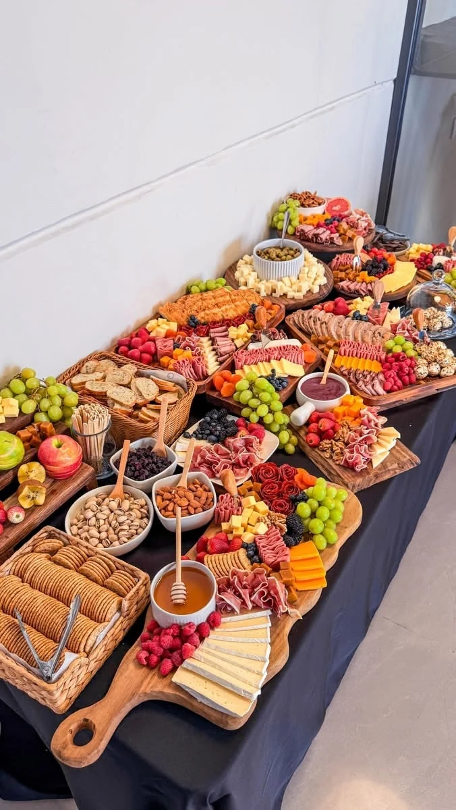
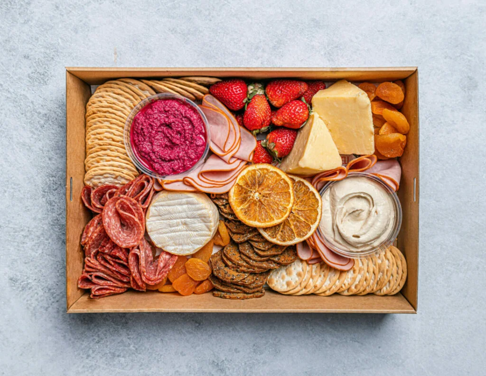

A board for the table
A compact focal point for a team gathering or client welcome. Discuss guest count and dietary needs when planning portions.
A REASON TO GATHER
Curated boards and grazing presentations for meetings, client receptions, and office celebrations.
Discuss your event
A SHARED TABLE
A grazing presentation invites people to pause, share, and connect. Tell us whether it is the main feature, a meeting break, or part of a reception so we can discuss a format that fits.
FIND THE RIGHT FORMAT
A compact focal point for a team gathering or client welcome. Discuss guest count and dietary needs when planning portions.
A larger shared presentation for office celebrations and receptions, planned around access, table space, and guest flow.
Interested in dessert grazing or a pastry presentation? Include it in your inquiry so available options can be confirmed.
BEFORE WE SET THE TABLE
PLAN AHEAD
Allow 5 business days for charcuterie and grazing displays.
Read ordering & booking termsLET’S PLAN YOUR NEXT GATHERING
A CLOSER LOOK
